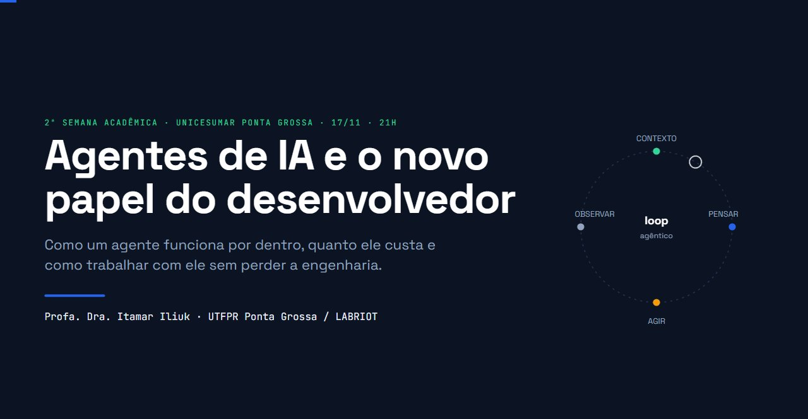

Agentes de IA e o novo papel do desenvolvedorAI agents and the new role of the developer
Como um agente funciona por dentro, quanto ele custa e como trabalhar com ele sem perder a engenharia. Uma palestra para estudantes de computação, com diagramas, código e calculadoras que rodam no próprio slide.
How an agent works inside, what it costs and how to work with it without losing the engineering. A talk for computing students, with diagrams, code and calculators that run inside the slides. The slides are in Portuguese.

Do conceito à prática, em seis partesFrom concept to practice, in six parts
Em cada parte: o conceito, como funciona por dentro (com diagrama) e a prática, com código, pseudocódigo ou uma calculadora para mexer.
Each part has the concept, how it works inside (with a diagram) and the practice, with code, pseudocode or a calculator to play with.
O que é um agente de IAWhat an AI agent is
Um chat responde; um agente persegue um objetivo. O loop pensar, agir, observar, um agente mínimo em 15 linhas e o que o Claude Code e o Antigravity, com Gemini, fazem de diferente.
A chat answers; an agent pursues a goal. The think, act, observe loop, a minimal agent in 15 lines and how Claude Code and Antigravity, with Gemini, differ.
O harness do agenteThe agent harness
O modelo é o motor; o harness é o carro inteiro. Memória do projeto, skills, permissões e hooks, subagentes e MCP, a tomada padrão para ferramentas.
The model is the engine; the harness is the whole car. Project memory, skills, permissions and hooks, subagents and MCP, the standard plug for tools.
Tokens, local × nuvem, CAPEX × OPEXTokens, local vs. cloud, CAPEX vs. OPEX
Agente não é grátis. Por que o custo cresce mais rápido que os passos, quanto gasta um time, se um modelo cabe na sua GPU e quando um servidor próprio se paga.
Agents are not free. Why the cost grows faster than the steps, what a team spends, whether a model fits your GPU and when your own server pays off.
Spec-Driven DevelopmentSpec-Driven Development
Quando escrever código fica barato, o que vale é saber o que construir. Vibe coding contra specs, os quatro artefatos de uma feature e o que continua sendo trabalho humano.
When writing code gets cheap, knowing what to build is what counts. Vibe coding versus specs, the four artefacts of a feature and what stays human work.
CI/CD com ferramentas agênticasCI/CD with agentic tools
O agente entra no pipeline como mais um integrante do time, com crachá limitado: portões humanos, GitHub Actions e um build que se conserta dentro de limites claros.
The agent joins the pipeline as one more team member, with a limited badge: human gates, GitHub Actions and a build that fixes itself within clear limits.
Rastreabilidade, observabilidade e AI safetyTraceability, observability and AI safety
Se um agente escreveu, alguém precisa responder por quê, quanto custou e quem aprovou. Do requisito ao deploy, traces de execução, prompt injection e defesa em camadas.
If an agent wrote it, someone must answer why, what it cost and who approved it. From requirement to deploy, execution traces, prompt injection and layered defence.
O novo papel do desenvolvedorThe new role of the developer
A IA não substitui quem faz engenharia. Ela muda onde está o trabalho: menos digitação, mais especificação, arquitetura, revisão, segurança e responsabilidade pelo resultado.
AI does not replace people who do engineering. It moves where the work is: less typing, more specification, architecture, review, security and responsibility for the result.
O agente aceleraThe agent speeds up
- digitar código, boilerplate e CRUD
- testes unitários
- refatoração mecânica
- documentação
- typing code, boilerplate and CRUD
- unit tests
- mechanical refactoring
- documentation
Continua humanoStays human
- entender o problema
- decidir os trade-offs
- definir o que é "pronto"
- revisar e assinar
- responder pelo erro
- understanding the problem
- deciding the trade-offs
- defining what "done" means
- reviewing and signing off
- answering for the mistake
Desafio de uma noiteOne-evening challenge
Para quem estava na plateia e para quem chegou agora: use o agente como tutor, não como muleta.
For those who were there and those arriving now: use the agent as a tutor, not a crutch.
- Escolha um trabalho pequeno da faculdade.
- Escreva um spec.md de uma página, com três critérios de aceite.
- Escreva os testes antes.
- Deixe um agente implementar numa branch.
- Leia o diff inteiro e anote o que você mudaria.
- Registre quantos tokens gastou.
- Pick a small university assignment.
- Write a one-page spec.md with three acceptance criteria.
- Write the tests first.
- Let an agent implement it on a branch.
- Read the whole diff and note what you would change.
- Record how many tokens you spent.